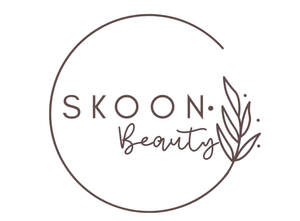

Trade Mark Journal No.2025/048 28 November 2025
UK00004292375 10 November 2025 (3)

- Class 3
- Hair care lotions; Hair care serums; Hair care serum; Hair care creams; Hair care masks; Hair care preparations; Hair care agents; Hair care lotions [for cosmetic use]; Hair care creams [for cosmetic use]; Cosmetic hair care preparations; Oil baths for hair care; Skin care mousse; Skin care cosmetics; Beard care preparations; Body care cosmetics; Hair care preparations, not for medical purposes; Skin care preparations; Skin care oils [cosmetic]; Hair shampoos; Hair cosmetics; Hair shampoo; Skin care lotions [cosmetic]; Exfoliants for the care of the skin; Skin care creams, other than for medical use; Facial care preparations; Essences for skin care; Hair styling lotions; Skin, eye and nail care preparations; Hair moisturizers; Hair strengthening treatment lotions; Skin care oils [non-medicated]; Hand masks for skin care; Shampoos for human hair; Hair lotions; Beauty care cosmetics; Beauty creams for body care; Baby hair conditioner; Skin care creams [cosmetic]; Cosmetic creams for skin care; Skin care (Cosmetic preparations for -); Cosmetic preparations for skin care; Hair serums; Lotions for face and body care; Hair lotion; Hair emollients; Hair conditioner; Skin care products for animals; Soaps for body care; Hair protection lotions; Conditioners for treating the hair; Cleansing milks for skin care; Wax treatments for the hair; Hair moisturisers; Perfumed oils for skin care; Foot masks for skin care; Milky lotions for skin care; Body cleaning and beauty care preparations; Cosmetic preparations for the hair and scalp; Horse oil cream for skin care; Hair treatment preparations; Hair nourishers; Hair balm; Hair relaxers; Beauty preparations for the hair; Hair grooming preparations; Beauty care preparations; Hair styling gel; Non-medicated skin care preparations; Hair conditioners for babies; Sun care lotions; Nail care preparations; Non-medicated hair shampoos; Hair dye; Hair conditioners; Hair permanent treatments; Hair bleach; Deodorants for body care; Hair rinses [for cosmetic use]; Hair styling waxes.
Busola Ademola